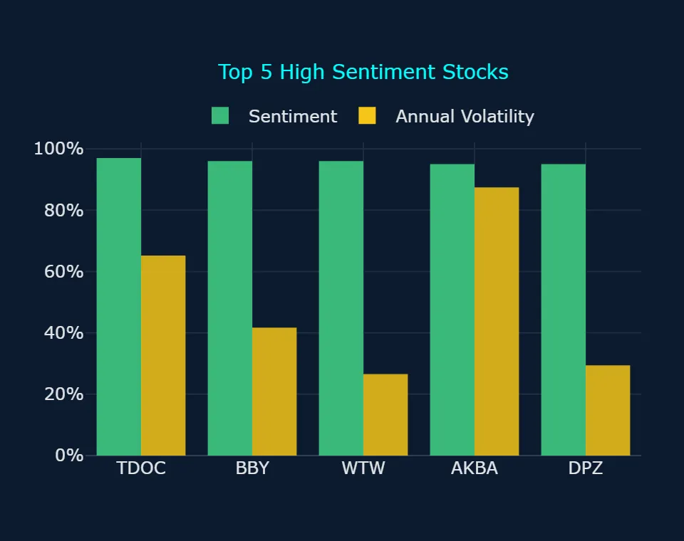
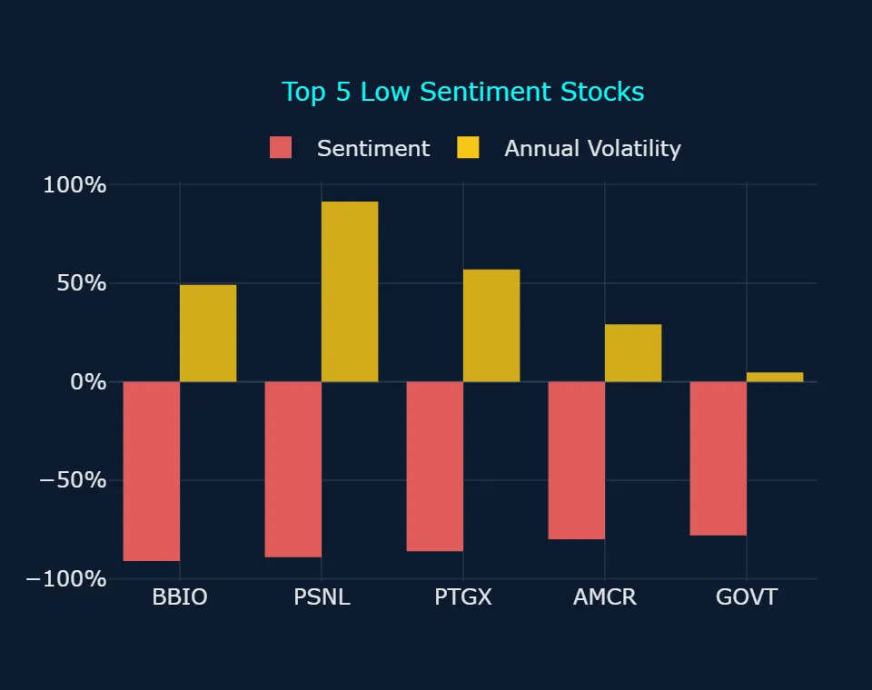
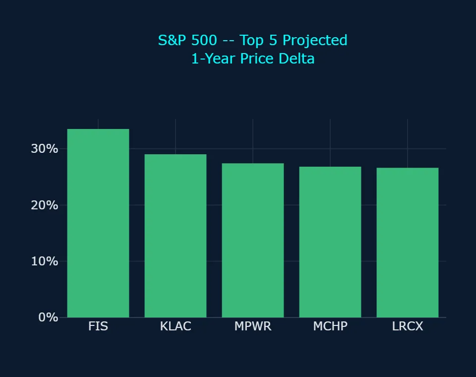
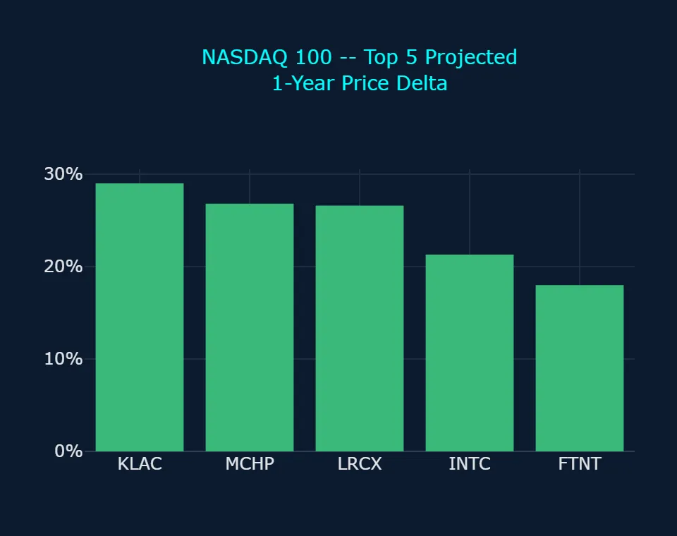
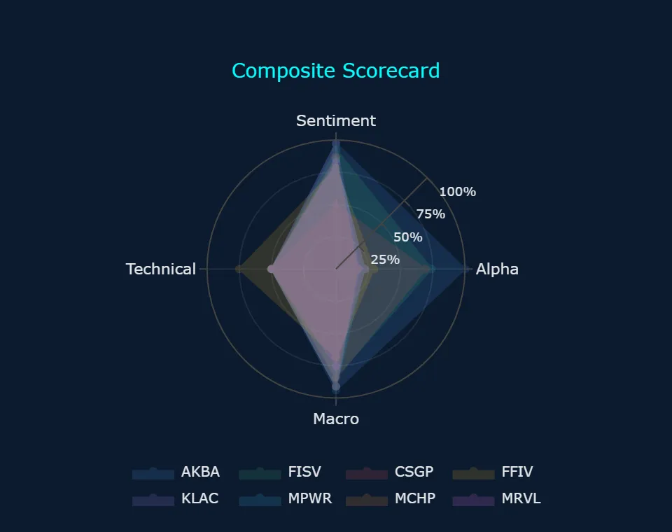
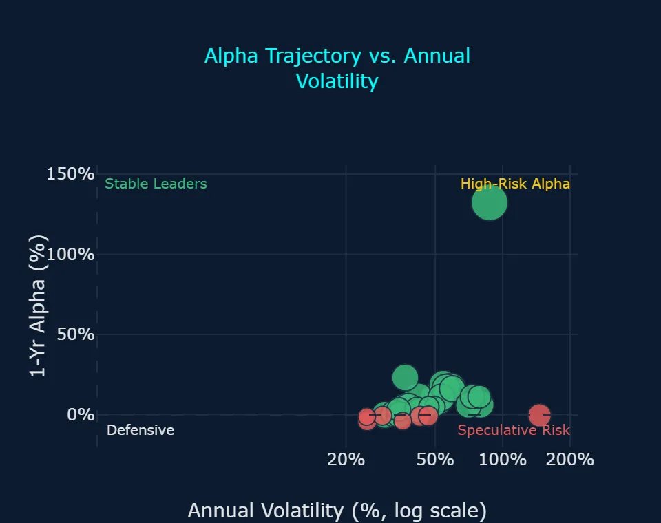
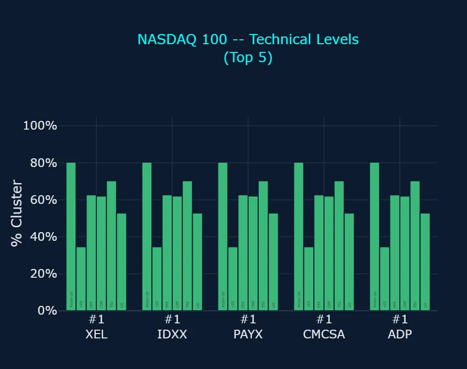
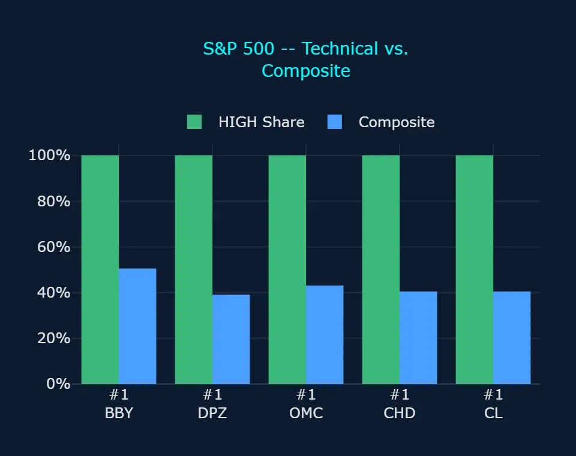
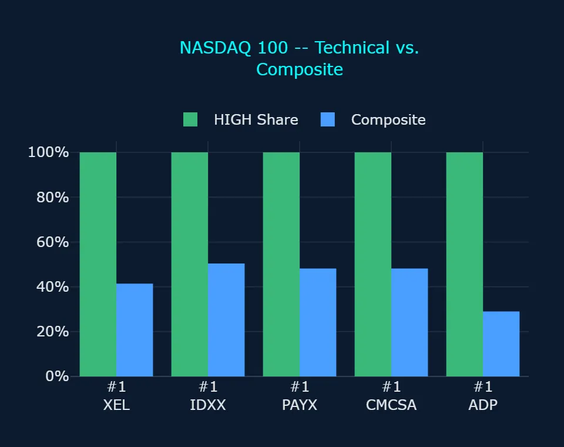

Zoonova AI: Pre-Market Quantitative Briefing – November 19, 2026
Session Quantitative Briefing: The Zoonova AI Intelligence Engine executes a hybrid architecture combining a proprietary Quad-Ensemble machine learning framework with Google Gemini Flash for real-time contextual synthesis and semantic macroeconomic grounding. The quantitative pipeline integrates four specialized estimators: Random Forest Regressor (RFR) for baseline structural stability, eXtreme Gradient Boosting (XGB) optimized for residual loss minimization, Categorical Boosting (CAT) for high-cardinality categorical signal processing, and Temporal Fusion Transformer (TFT) for multi-horizon price and volatility forecasting.
Zoonova AI: Pre-Market Momentum & Liquidity Report
1. QUANTITATIVE MODEL OVERVIEW & SIGNAL METRICS
This intelligence report synthesizes predictive analytics from Zoonova's Quad-Ensemble–incorporating Random Forest Regressor [RFR], eXtreme Gradient Boosting [XGB], Categorical Boosting [CAT], and Temporal Fusion Transformer [TFT]–to determine multi-horizon price targets and alpha probabilities. Market sentiment trends are systematically tracked using VADER sentiment scoring, while cross-asset regime shifts and structural outliers are detected via BIRCH clustering for anomaly detection and macro breadth modeling.
- SPDR S&P 500 ETF Trust (SPY) closed at $730.20 on 2026-11-18 (Zoonova, 2026-11-18), registering negative sentiment of -30.0% alongside flat alpha projections (0.00% across all horizons), an annualized volatility of 16.93%, and a 1-year projected target of $806.72 representing a +10.5% implied advance.
- Invesco QQQ Trust Series 1 (QQQ) closed at $659.51 on 2026-11-18 (Zoonova, 2026-11-18), showing positive sentiment of +56.0%, near-term alpha of +1.22% at the 2-week mark, an annualized volatility of 22.67%, and a 1-year projected price of $718.71 (+9.0% implied gain).
- SPDR Dow Jones Industrial Average ETF (DIA) closed at $501.73 on 2026-11-18 (Zoonova, 2026-11-18), displaying muted sentiment of +13.0%, persistent negative projected alpha across forward horizons including -4.03% at 1 year, and a registered Bearish Long-Term (1w) Trend Anomaly toward a $534.10 target.
- Vanguard Total Bond Market ETF (BND) closed at $70.87 on 2026-11-18 (Zoonova, 2026-11-18) with strong positive sentiment of +70.0% and an annualized volatility of 4.42%, projecting long-term appreciation to $76.82 (+8.4% implied gain) despite short-term yield volatility.
- SPDR Gold Shares ETF (GLD) closed at $341.19 on 2026-11-18 (Zoonova, 2026-11-18), registering a Bearish Short-Term (3d) Trend Anomaly alongside an annualized volatility of 24.87% and a projected 1-year alpha of -4.10% toward a $362.98 price projection.
2. SENTIMENT INSIGHTS – TOP 5 HIGH & LOW
Top 5 High Sentiment Stocks
| Ticker | Company Name | Sentiment Score | Primary Catalyst / Driver |
|---|---|---|---|
| TDOC | Teladoc Health Inc | +97.0% | Truist Securities raised its price target following third-quarter EBITDA outperformance and an increased full-year profitability outlook (Investing.com, 2026-11-18). |
| BBY | Best Buy Co. Inc. | +96.0% | Shares rallied near annual highs supported by early holiday retail shopping momentum and prior upward guidance revisions (Tickeron, 2026-11-17). |
| WTW | Willis Towers Watson Public Limited Co | +96.0% | Wells Fargo boosted its price target to $390, emphasizing organic brokerage growth acceleration and disciplined progress toward 30% operating margins by 2028 (TipRanks, 2026-11-19). |
| AKBA (Micro-Cap) | Akebia Therapeutics Inc. | +95.0% | Investor optimism surged after the biopharmaceutical firm finalized a term loan facility worth up to $140 million with Symbiotic Capital alongside expanding dialysis patient adoption (ABF Journal, 2026-11-17). |
| DPZ | Dominos Pizza Inc | +95.0% | Robert W. Baird upgraded the restaurant operator to Outperform with a $400 price target on accelerating same-store sales and international reset initiatives (Quantisnow, 2026-11-13). |
Top 5 Low Sentiment Stocks
| Ticker | Company Name | Sentiment Score | Primary Friction / Risk Factor |
|---|---|---|---|
| BBIO | BridgeBio Pharma Inc | -91.0% | Persistent valuation hesitation and competitive pressure surrounding genetic cardiomyopathy therapies created positioning headwinds ahead of late-year healthcare summits (GlobeNewswire, 2026-11-09). |
| PSNL | Personalis Inc | -89.0% | Multiple shareholder litigation firms launched inquiries into the fairness and fiduciary compliance of the $16.25 per share take-private acquisition agreement with Tempus AI (GlobeNewswire, 2026-11-18). |
| PTGX | Protagonist Therapeutics Inc | -86.0% | Notable insider share liquidations following a major milestone payment rally prompted heavy institutional profit-taking (Investing.com, 2026-11-18). |
| AMCR | Amcor Plc | -80.0% | Management reduced its transition-period earnings guidance due to cost lag timing from elevated energy and logistics expenses (PR Newswire, 2026-11-04). |
| GOVT* | iShares U.S. Treasury Bond ETF | -78.0% | Climbing Treasury yields and hawkish Federal Reserve meeting minutes signaling further interest rate increases weighed on sovereign fixed-income asset valuations (Charles Schwab, 2026-11-18). |
* ETF (exchange-traded fund)
3. ALPHA PROBABILITY & PRICE DELTA LEADERBOARD – 1-YEAR HORIZON
S&P 500 – Top 5 High Alpha Probability (1yr)
| Ticker | Prev Close 2026-11-18 ($) | 1-Yr Target Price ($) | Alpha Probability (%) | Implied Excess Alpha (%) | 10%+ Alpha? |
|---|---|---|---|---|---|
| FISV | $60.48 | $72.74 | 62.76% | 9.78% | Split |
| CSGP | $29.90 | $36.11 | 58.85% | 10.28% | Both Yes |
| CPRT | $31.46 | $34.70 | 53.06% | -0.19% | Split |
| BSX | $43.64 | $48.46 | 46.86% | 0.56% | Both No |
| LEN | $82.91 | $95.44 | 43.66% | 4.63% | Both No |
S&P 500 – Top 5 Price Delta + % Change (1yr)
| Ticker | Prev Close 2026-11-18 ($) | 1-Yr Target Price ($) | Absolute Delta ($) | Projected 1-Yr % Change (%) | Implied Excess Alpha (%) |
|---|---|---|---|---|---|
| FIS | $26.73 | $35.69 | $8.96 | 33.52% | 23.06% |
| KLAC | $144.88 | $186.90 | $42.02 | 29.00% | 18.53% |
| MPWR | $1,310.91 | $1,669.56 | $358.65 | 27.36% | 16.88% |
| MCHP | $59.67 | $75.68 | $16.01 | 26.83% | 16.34% |
| LRCX | $211.67 | $267.92 | $56.25 | 26.57% | 16.09% |
NASDAQ 100 – Top 5 High Alpha Probability (1yr)
| Ticker | Prev Close 2026-11-18 ($) | 1-Yr Target Price ($) | Alpha Probability (%) | Implied Excess Alpha (%) | 10%+ Alpha? |
|---|---|---|---|---|---|
| CPRT | $31.46 | $34.70 | 53.06% | -0.19% | Split |
| DXCM | $82.52 | $92.42 | 31.40% | 1.51% | Both No |
| MRNA | $196.79 | $216.43 | 26.97% | -0.50% | Both No |
| NFLX | $59.82 | $65.99 | 23.46% | -0.16% | Both No |
| MRVL | $145.54 | $169.98 | 18.93% | 6.31% | Both No |
NASDAQ 100 – Top 5 Price Delta + % Change (1yr)
| Ticker | Prev Close 2026-11-18 ($) | 1-Yr Target Price ($) | Absolute Delta ($) | Projected 1-Yr % Change (%) | Implied Excess Alpha (%) |
|---|---|---|---|---|---|
| KLAC | $144.88 | $186.90 | $42.02 | 29.00% | 18.53% |
| MCHP | $59.67 | $75.68 | $16.01 | 26.83% | 16.34% |
| LRCX | $211.67 | $267.92 | $56.25 | 26.57% | 16.09% |
| INTC | $54.67 | $66.31 | $11.64 | 21.29% | 10.81% |
| FTNT | $131.81 | $155.49 | $23.68 | 17.97% | 7.48% |
4. REAL-TIME CONTEXTUAL ENRICHMENT
Broad equity markets faced pronounced cross-currents heading into the 2026-11-19 session, shaped by hawkish monetary policy signals and pivotal corporate milestones. Federal Reserve meeting minutes released on 2026-11-18 reiterated persistent inflation concerns, amplified by remarks from Federal Reserve Governor Christopher Waller suggesting openness to additional rate increases, which pushed the benchmark 10-year Treasury yield up toward 5.09% (Charles Schwab, 2026-11-18). Concurrently, the tech ecosystem absorbed the landmark Nasdaq market debut of Anthropic on 2026-11-19 following an $81.8 billion initial public offering priced at $83.00 per share (XTB, 2026-11-19). This high-profile liquidity event provided a test for artificial intelligence sentiment, which had experienced defensive sector rotation toward staples and traditional enterprise services throughout mid-November (Morningstar, 2026-11-18).
Correlating live developments with Zoonova predictive models highlights widening dispersion between high-conviction idiosyncratic compounders and broader index momentum. In the S&P 500 alpha probability rankings, CoStar Group (CSGP), which closed at $29.90 on 2026-11-18 (Zoonova, 2026-11-18), presents a 1-year alpha probability of 58.85% and a projected 1-year price of $36.11 (+10.28% 1-year alpha), where both models expect it to beat the benchmark by 10%+. Conversely, for Fiserv (FISV), which closed at $60.48 on 2026-11-18 with a 62.76% alpha probability and +9.78% projected 1-year alpha, the two models split on whether it will clear the 10%+ hurdle. In the Tech Stock Scorecard, Intel (INTC) commands the group's highest Composite at 50.1 alongside Macro Alignment of 86.0 and Sentiment Rating of 73.0, though the two models split on 10%+ outperformance. Meanwhile, mega-caps Apple (AAPL) and Amazon (AMZN) post lower Composites of 22.7 and 29.4 respectively, with neither model expecting 10%+ alpha, validating model signals of tech consolidation.
Breadth metrics confirmed a distinctly defensive tilt across institutional positioning. Anomaly detection via BIRCH clustering flagged 33 bearish names across moderate severity (6 names: 5 stocks, 1 ETF) and low severity (27 names: 24 stocks, 3 ETFs), including broad-market vehicles SPDR Dow Jones Industrial Average ETF (DIA) and SPDR Gold Shares ETF (GLD). In contrast, bullish anomalies were confined to just 13 low severity stocks with zero moderate or high severity appearances. This substantial bearish breadth asymmetry corroborates live market dynamics, confirming that while selective corporate catalysts generate strong localized performance, overall market posture remains constrained by elevated rate expectations and macro friction.
5. ANOMALY DETECTION SCANNER
Direction: Bearish
Moderate Severity (6 names: 5 stocks, 1 ETF)
- GDX* – VanEck Gold Miners ETF: Bearish Short-Term (3d) Trend Anomaly, Bearish Long-Term (1w) Trend Anomaly
- HUM – Humana Inc.: Bearish Short-Term (3d) Trend Anomaly, Bearish Long-Term (1w) Trend Anomaly
- MPC – Marathon Petroleum Corp: Bearish Short-Term (3d) Trend Anomaly, Bearish Long-Term (1w) Trend Anomaly
- MRK – Merck & Co Inc: Bearish Short-Term (3d) Trend Anomaly, Bearish Long-Term (1w) Trend Anomaly
- SCCO – Southern Copper Corporation: Bearish Short-Term (3d) Trend Anomaly, Bearish Long-Term (1w) Trend Anomaly
- UNH – Unitedhealth Group Inc: Bearish Short-Term (3d) Trend Anomaly, Bearish Long-Term (1w) Trend Anomaly
Low Severity (27 names: 24 stocks, 3 ETFs)
- AMGN – AMGEN Inc.: Bearish Short-Term (3d) Trend Anomaly
- CDE – Coeur Mining Inc: Bearish Long-Term (1w) Trend Anomaly
- CNC – Centene Corp.: Bearish Short-Term (3d) Trend Anomaly
- CVS – CVS Health Corp: Bearish Short-Term (3d) Trend Anomaly
- CVX – Chevron Corp.: Bearish Short-Term (3d) Trend Anomaly
- DIA* – SPDR Dow Jones Industrial Average ETF: Bearish Long-Term (1w) Trend Anomaly
- DVA – DaVita Inc: Bearish Short-Term (3d) Trend Anomaly
- ELV – Elevance Health Inc: Bearish Short-Term (3d) Trend Anomaly
- ESLT – Elbit Systems Ltd.: Bearish Short-Term (3d) Trend Anomaly
- FCX – Freeport-McMoRan Inc: Bearish Long-Term (1w) Trend Anomaly
- GLD* – SPDR Gold Shares ETF: Bearish Short-Term (3d) Trend Anomaly
- HCA – HCA Healthcare Inc: Bearish Short-Term (3d) Trend Anomaly
- HOOD – Robinhood Markets Inc: Bearish Long-Term (1w) Trend Anomaly
- IAU* – iShares Gold Trust: Bearish Short-Term (3d) Trend Anomaly
- IDYA – Ideaya Biosciences Inc: Bearish Long-Term (1w) Trend Anomaly
- JPM – JPMorgan Chase & Co.: Bearish Long-Term (1w) Trend Anomaly
- MRNA – Moderna Inc: Bearish Long-Term (1w) Trend Anomaly
- NEM – Newmont Corp: Bearish Short-Term (3d) Trend Anomaly
- NTRA – Natera Inc: Bearish Long-Term (1w) Trend Anomaly
- OMER – Omeros Corporation: Bearish Long-Term (1w) Trend Anomaly
- PSX – Phillips 66: Bearish Short-Term (3d) Trend Anomaly
- PTGX – Protagonist Therapeutics Inc: Bearish Long-Term (1w) Trend Anomaly
- RVMD – Revolution Medicines Inc: Bearish Long-Term (1w) Trend Anomaly
- VGZ – Vista Gold Corp.: Bearish Short-Term (3d) Trend Anomaly
- VIR – Vir Biotechnology Inc: Bearish Long-Term (1w) Trend Anomaly
- VLO – Valero Energy Corp.: Bearish Short-Term (3d) Trend Anomaly
- XOM – Exxon Mobil Corp.: Bearish Short-Term (3d) Trend Anomaly
Direction: Bullish
Low Severity (13 stocks)
- AKAM – Akamai Technologies Inc: Bullish Short-Term (3d) Trend Anomaly
- AMD – Advanced Micro Devices Inc.: Bullish Short-Term (3d) Trend Anomaly
- CRWD – Crowdstrike Holdings Inc: Bullish Short-Term (3d) Trend Anomaly
- FFIV – F5 Inc: Bullish Short-Term (3d) Trend Anomaly
- FTNT – Fortinet Inc: Bullish Short-Term (3d) Trend Anomaly
- GNRC – Generac Holdings Inc: Bullish Short-Term (3d) Trend Anomaly
- KRYS – Krystal Biotech Inc: Bullish Short-Term (3d) Trend Anomaly
- NET – Cloudflare Inc: Bullish Short-Term (3d) Trend Anomaly
- OKTA – Okta Inc: Bullish Short-Term (3d) Trend Anomaly
- PANW – Palo Alto Networks Inc: Bullish Short-Term (3d) Trend Anomaly
- TJX – TJX Companies, Inc.: Bullish Short-Term (3d) Trend Anomaly
- TTWO – Take-Two Interactive Software, Inc.: Bullish Short-Term (3d) Trend Anomaly
- URGN – UroGen Pharma Ltd: Bullish Long-Term (1w) Trend Anomaly
* ETF (exchange-traded fund)
6. STRATEGIC INVESTMENT ASSESSMENT
- Exercise defensive portfolio positioning given severe breadth asymmetry: BIRCH clustering registered 33 bearish anomalies across moderate (6 names: 5 stocks, 1 ETF) and low severity (27 names: 24 stocks, 3 ETFs), versus only 13 bullish anomaly stocks, signaling institutional de-risking across cyclical and commodity sectors.
- Prioritize top-tier names in the Main Scorecard demonstrating resilient fundamental alignments: Akebia Therapeutics (AKBA) leads the Main Scorecard with a Composite of 85.7 and Sentiment Rating of 97.5 where both models expect it to beat the benchmark by 10%+, while CoStar Group (CSGP) pairs a 62.7 Composite with a 58.85% 1-year alpha probability and mutual model agreement for 10%+ benchmark outperformance.
- De-emphasize mega-cap technology exposure in favor of high Macro Alignment selections: The Tech Stock Scorecard indicates subdued potential across Apple (Composite 22.7, Macro Alignment 3.6) and Amazon (Composite 29.4, Macro Alignment 8.6), where neither model expects 10%+ alpha, while Intel (INTC) presents a superior structural buffer with a 50.1 Composite and 86.0 Macro Alignment.
- Maintain cautious sizing in rate-sensitive and commodity proxies: The registered Bearish Long-Term Trend Anomaly on SPDR Dow Jones Industrial Average ETF (DIA) and Bearish Short-Term Trend Anomaly on SPDR Gold Shares ETF (GLD), alongside negative projected 1-year alpha for both assets (-4.03% and -4.10% respectively), warrant reduced exposure until sovereign yield volatility stabilizes.
7. STOCK SCORECARD
Main Scorecard
| Ticker | Composite (%) | Alpha Rating | 10%+ Alpha? | Projected 1-Yr Change (%) | Street Consensus (Upside) | Next Earnings | Sentiment Rating | Technical Signal | Macro Alignment | Anomaly Flag | Catalyst / Risk | Market Cap | EPS Revisions (30d) | Short Interest / DTC | Options Flow | Earnings Surprise (4Q) | Bias |
|---|---|---|---|---|---|---|---|---|---|---|---|---|---|---|---|---|---|
| AKBA | 85.7% | 100.0 | Both Yes | +143.9% | Buy (+265.9%) | 2027-03-25 | 97.5 | 50.0 | 93.9 | None | Vafseo Patent Extension | $116.6M | Downward (-8.2%) | 9.8% / 3.1 DTC | Bullish (Call Skew) | 1/4 Beats | Bullish |
| FISV | 74.5% | 73.9 | Split | +20.3% | Hold (-2.4%) | 2027-02-09 | 92.5 | 50.0 | 83.4 | None | Cost Reduction Targets | $32.2B | Downward (-4.1%) | 3.7% / 2.5 DTC | Bullish (Call Skew) | 2/4 Beats | Bullish |
| CSGP | 62.7% | 69.3 | Both Yes | +20.8% | Hold (+30.8%) | 2027-02-23 | 50.0 | 50.0 | 84.7 | None | Residential Platform Spending | $12.3B | Upward (+14.2%) | 3.2% / 2.1 DTC | Neutral / Mixed | 4/4 Beats (+24.5% avg) | Neutral |
| FFIV | 60.7% | 29.3 | Both No | +14.4% | Hold (+38.0%) | 2027-01-26 | 78.0 | 75.0 | 68.1 | Bullish (3d) | Multi Cloud Integration | $17.3B | Upward (+6.8%) | 2.2% / 1.9 DTC | Bullish (Call Skew) | 4/4 Beats (+21.5% avg) | Neutral |
| KLAC | 60.4% | 18.0 | Split | +29.0% | Buy (+60.1%) | 2027-02-04 | 97.0 | 50.0 | 91.3 | None | Wafer Inspection Demand | $188.8B | Upward (+3.4%) | 1.7% / 1.6 DTC | Bullish (Call Skew) | 4/4 Beats (+3.4% avg) | Neutral |
| MPWR | 58.4% | 21.9 | Split | +27.4% | Strong Buy (+36.1%) | 2027-01-28 | 84.5 | 50.0 | 91.1 | None | Enterprise Data Acceleration | $64.2B | Upward (+5.8%) | 2.4% / 1.8 DTC | Bullish (Call Skew) | 4/4 Beats (+6.1% avg) | Neutral |
| MCHP | 57.2% | 16.5 | Split | +26.8% | Buy (+47.5%) | 2027-02-04 | 86.5 | 50.0 | 90.8 | None | Automotive Ethernet Sampling | $32.5B | Downward (-6.5%) | 6.7% / 3.6 DTC | Neutral / Mixed | 3/4 Beats | Neutral |
| MRVL | 54.8% | 22.3 | Both No | +16.8% | Strong Buy (+106.2%) | 2026-12-03 (in 14d) | 82.5 | 50.0 | 75.2 | None | Optical Networking Growth | $130.4B | Upward (+8.4%) | 2.8% / 1.2 DTC | Bullish (Call Skew) | 4/4 Beats (+7.2% avg) | Neutral |
| LEN | 54.5% | 51.4 | Both No | +15.1% | Sell (-4.8%) | 2026-12-15 (in 26d) | 50.0 | 50.0 | 70.5 | None | Housing Margin Pressure | $19.6B | Downward (-5.7%) | 0.3% / 0.1 DTC | Neutral / Mixed | 2/4 Beats | Neutral |
| CPRT | 53.4% | 62.5 | Split | +10.3% | Buy (+20.5%) | 2026-12-01 (in 12d) | 50.0 | 50.0 | 48.5 | None | Auction Volume Expansion | $29.1B | Neutral/Flat (0.0%) | 1.4% / 2.6 DTC | Neutral / Mixed | 2/4 Beats | Neutral |
| FIS | 53.4% | 51.4 | Split | +33.5% | Hold (+30.9%) | 2027-02-23 | 28.5 | 50.0 | 91.7 | None | Bank Tech Realignment | $13.8B | Downward (-8.0%) | 4.1% / 3.6 DTC | Neutral / Mixed | 3/4 Beats | Bearish |
| AKAM | 53.2% | 31.1 | Split | +21.0% | Hold (+47.3%) | 2027-02-18 | 32.0 | 75.0 | 85.3 | Bullish (3d) | Cloud Capex Requirements | $12.2B | Downward (-4.5%) | 13.3% / 3.9 DTC | Bullish (Call Skew) | 3/4 Beats | Bearish |
| CDE | 49.4% | 35.6 | Both No | +16.3% | Buy (+78.1%) | 2027-02-17 | 71.0 | 25.0 | 73.6 | Bearish (1w) | Precious Metals Volatility | $13.5B | Upward (+12.5%) | 2.9% / 1.5 DTC | Bearish (Put Heavy) | 2/4 Beats | Neutral |
| ESLT | 47.7% | 37.9 | Both No | +13.3% | Hold (+20.5%) | 2027-03-16 | 69.0 | 25.0 | 64.1 | Bearish (3d) | Defense Order Backlog | $32.7B | Upward (+4.2%) | 0.5% / 2.5 DTC | Neutral / Mixed | 3/4 Beats | Neutral |
| HOOD | 44.1% | 21.4 | Split | +21.7% | Buy (+44.6%) | 2027-02-16 | 56.5 | 25.0 | 86.7 | Bearish (1w) | Trading Platform Competition | $62.3B | Downward (-8.7%) | 3.9% / 1.7 DTC | Bearish (Put Heavy) | 3/4 Beats | Neutral |
| CVS | 42.0% | 13.7 | Both No | +13.7% | Buy (+31.9%) | 2027-02-11 | 74.5 | 25.0 | 65.3 | Bearish (3d) | Healthcare Business Separation | $104.5B | Downward (-3.5%) | 1.4% / 2.1 DTC | Bearish (Put Heavy) | 4/4 Beats (+6.8% avg) | Neutral |
| MRNA | 41.2% | 31.8 | Both No | +10.0% | Hold (-38.9%) | 2027-02-12 | 67.0 | 25.0 | 43.6 | Bearish (1w) | Oncology Pipeline Investment | $80.7B | Upward (+15.2%) | 8.8% / 3.4 DTC | Bearish (Put Heavy) | 3/4 Beats | Neutral |
| IDYA | 31.5% | 16.6 | Both No | +15.2% | Buy (+87.2%) | 2027-02-23 | 24.5 | 25.0 | 70.8 | Bearish (1w) | Clinical Pipeline Expansion | $2.6B | Downward (-3.2%) | 12.5% / 16.5 DTC | Bearish (Put Heavy) | 2/4 Beats | Bearish |
| AMCR | 25.7% | 9.9 | Both No | +9.7% | Buy (+3.7%) | 2027-02-02 | 10.0 | 50.0 | 38.8 | None | Input Cost Headwinds | $20.3B | Downward (-5.0%) | 5.0% / 7.4 DTC | Neutral / Mixed | 3/4 Beats | Bearish |
| IAU* | 21.7% | 11.2 | Both No | +9.2% | N/A (ETF) | N/A (ETF) | 25.0 | 25.0 | 29.0 | Bearish (3d) | Fed Rate Risks | $57.1B | N/A (ETF) | 0.8% / 1.1 DTC | Bearish (Put Heavy) | N/A (ETF) | Bearish |
* ETF (exchange-traded fund)
10%+ Alpha? – whether Zoonova's two 1-year models (alpha probability and price target) expect the stock to beat the benchmark by 10%+. “Both No” is common: 10% is a high bar.
Tech Stock Scorecard
| Ticker | Composite (%) | Alpha Rating | 10%+ Alpha? | Projected 1-Yr Change (%) | Street Consensus (Upside) | Next Earnings | Sentiment Rating | Technical Signal | Macro Alignment | Anomaly Flag | Catalyst / Risk | Market Cap | EPS Revisions (30d) | Short Interest / DTC | Options Flow | Earnings Surprise (4Q) | Bias |
|---|---|---|---|---|---|---|---|---|---|---|---|---|---|---|---|---|---|
| INTC | 50.1% | 7.2 | Split | +21.3% | Hold (+77.2%) | 2027-01-28 | 73.0 | 50.0 | 86.0 | None | Foundry Yield Improvements | $302.7B | Upward (+27.9%) | 2.8% / 1.9 DTC | Neutral / Mixed | 3/4 Beats | Neutral |
| TSLA | 43.6% | 3.9 | Both No | +12.4% | Buy (+8.0%) | 2027-01-27 | 72.0 | 50.0 | 59.7 | None | Autonomy Commercialization Ramp | $1.54T | Downward (-4.6%) | 2.3% / 2.5 DTC | Bullish (Call Skew) | 2/4 Beats | Neutral |
| NVDA | 42.3% | 9.5 | Both No | +15.7% | Buy (+74.7%) | 2027-02-24 | 50.0 | 50.0 | 72.1 | None | Data Center Infrastructure | $3.71T | Upward (+11.4%) | 1.1% / 1.4 DTC | Bullish (Call Skew) | 4/4 Beats (+8.9% avg) | Neutral |
| META | 41.7% | 2.5 | Both No | +10.4% | Buy (+34.9%) | 2027-01-27 | 74.0 | 50.0 | 49.6 | None | AI Infrastructure Spending | $1.58T | Upward (+2.8%) | 1.2% / 1.7 DTC | Bullish (Call Skew) | 4/4 Beats (+8.1% avg) | Neutral |
| AMD | 39.2% | 2.6 | Both No | +16.7% | Buy (+20.7%) | 2027-02-02 | 19.0 | 75.0 | 74.6 | Bullish (3d) | Server CPU Expansion | $825.6B | Upward (+6.5%) | 2.4% / 2.4 DTC | Bullish (Call Skew) | 4/4 Beats (+9.2% avg) | Bearish |
| GOOGL | 37.2% | 4.2 | Both No | +8.1% | Buy (+46.0%) | 2027-02-03 | 80.5 | 50.0 | 16.6 | None | Cloud Growth Acceleration | $3.56T | Downward (-6.2%) | 0.8% / 1.6 DTC | Neutral / Mixed | 3/4 Beats | Bearish |
| MSFT | 35.3% | 4.6 | Both No | +6.3% | Strong Buy (+20.5%) | 2027-01-27 | 83.5 | 50.0 | 2.9 | None | Cloud Revenue Acceleration | $3.82T | Upward (+3.3%) | 0.8% / 1.8 DTC | Bullish (Call Skew) | 4/4 Beats (+5.4% avg) | Bearish |
| AMZN | 29.4% | 1.3 | Both No | +7.2% | Buy (+19.9%) | 2027-02-04 | 59.0 | 50.0 | 8.6 | None | Cloud Backlog Expansion | $2.96T | Upward (+4.1%) | 0.9% / 1.9 DTC | Bullish (Call Skew) | 4/4 Beats (+12.8% avg) | Bearish |
| AVGO | 29.1% | 2.4 | Both No | +11.4% | Buy (+48.3%) | 2026-12-09 (in 20d) | 19.0 | 50.0 | 55.6 | None | Custom Silicon Acceleration | $1.74T | Upward (+7.9%) | 1.4% / 1.8 DTC | Bullish (Call Skew) | 4/4 Beats (+7.8% avg) | Bearish |
| AAPL | 22.7% | 4.2 | Both No | +6.4% | Buy (-1.5%) | 2027-01-28 | 33.0 | 50.0 | 3.6 | None | Services Margin Resilience | $5.14T | Downward (-1.8%) | 1.0% / 3.4 DTC | Neutral / Mixed | 4/4 Beats (+4.5% avg) | Bearish |
| SPCX | N/H | N/H | N/A | N/A | Strong Buy | 2027-01-19 | N/H | N/H | N/H | None | Starship Reusability Milestones | $1.95T | N/A (Recent IPO) | 1.1% / 1.2 DTC | Bullish (Call Skew) | 2/2 Beats | N/A |
N/H: no ML scores yet (insufficient trading history for the models).
Search-grounded columns (Street Consensus (Upside), Next Earnings, Catalyst / Risk, Market Cap, EPS Revisions (30d), Short Interest / DTC, Options Flow, Earnings Surprise (4Q)): MarketBeat, Public, Benzinga, Finviz, CNN (sources dated 2026-11-18).






Educational purposes only. Not investment advice.
Zoonova AI: Pre-Market Technical Analysis Report
Unanimous 6/6 HIGH indicator clusters across top constituents contrast with composite divergence driven by subdued macro alignments.
1. 6 CORE INDICATORS
Indicator levels (LOW / MEDIUM / HIGH) and % Cluster come from Zoonova's BIRCH model (Balanced Iterative Reducing and Clustering using Hierarchies), an unsupervised machine-learning clustering model used for pattern recognition. Each indicator is clustered across the stock universe; % Cluster is the centroid of the cluster a stock falls in.
| Indicator | Category | Role |
|---|---|---|
| ARUPAroon Up | Trend Direction | Recency of the highest high in the lookback window; collapses in bear markets, so HIGH means price keeps printing fresh swing highs. |
| +DIPositive Directional Indicator | Trend Direction | Upward directional movement relative to true range; unlike ADX it collapses in sell-offs, so HIGH confirms buyer-driven expansion. |
| MFIMoney Flow Index | Volume / Inflow | Volume-weighted RSI from 0 to 100; falls as money leaves on down days, so HIGH means inflow on up days outweighs outflow. |
| CMFChaikin Money Flow | Volume / Inflow | Close location within the bar weighted by volume; plunges negative in liquidation, so HIGH confirms sustained buying into the top of daily ranges. |
| TSITrue Strength Index | Momentum | Double-smoothed momentum from -100 to +100; deeply negative in downtrends, so HIGH shows consistent multi-period upward thrust. |
| UOUltimate Oscillator | Momentum | Buying pressure across 7-, 14- and 28-period windows from 0 to 100; sinks when closes sit near the lows, so HIGH means buyers are in control on every timeframe. |
2. TECHNICAL REGIME
| Index | Universe | All HIGH (6/6) | Avg HIGH | Aroon Up HIGH | +DI HIGH | MFI HIGH | CMF HIGH | TSI HIGH | UO HIGH |
|---|---|---|---|---|---|---|---|---|---|
| S&P 500 | 424 | 68 | 3.1/6 | 159 | 194 | 225 | 241 | 266 | 250 |
| NASDAQ 100 | 71 | 9 | 2.8/6 | 25 | 29 | 35 | 34 | 35 | 41 |
The S&P 500 displays stronger broad participation than the NASDAQ 100, posting an average HIGH count of 3.1 with 68 stocks with all indicators HIGH out of 424 constituents, led by 266 members at HIGH in TSI. In contrast, the NASDAQ 100 records an average HIGH count of 2.8 with 9 stocks with all indicators HIGH out of 71 constituents, led by 41 names at HIGH in UO.
3. TOP 5 BULLISH CONFLUENCE
Ranking: Rank = HIGH count (#1 = 6/6, #2 = 5/6, ...); within a rank, Sentiment (desc), then ticker. Sentiment only orders tickers within a rank; it is not a technical signal.
S&P 500 – Top 5 Bullish Confluence
| Rank | Ticker | Aroon Up | +DI | MFI | CMF | TSI | UO | HIGH | Sentiment |
|---|---|---|---|---|---|---|---|---|---|
| 1 | BBY | HIGH 80.3% | HIGH 34.6% | HIGH 62.7% | HIGH 62.0% | HIGH 70.3% | HIGH 52.8% | 6/6 | +96.0% |
| 1 | DPZ | HIGH 80.3% | HIGH 34.6% | HIGH 62.7% | HIGH 62.0% | HIGH 70.3% | HIGH 52.8% | 6/6 | +95.0% |
| 1 | OMC | HIGH 80.3% | HIGH 34.6% | HIGH 62.7% | HIGH 62.0% | HIGH 70.3% | HIGH 52.8% | 6/6 | +95.0% |
| 1 | CHD | HIGH 80.3% | HIGH 34.6% | HIGH 62.7% | HIGH 62.0% | HIGH 70.3% | HIGH 52.8% | 6/6 | +94.0% |
| 1 | CL | HIGH 80.3% | HIGH 34.6% | HIGH 62.7% | HIGH 62.0% | HIGH 70.3% | HIGH 52.8% | 6/6 | +94.0% |
S&P 500 – Signal Groups
| Rank | Ticker | Trend Direction | Volume / Inflow | Momentum |
|---|---|---|---|---|
| 1 | BBY | 2 of 2 HIGH | 2 of 2 HIGH | 2 of 2 HIGH |
| 1 | DPZ | 2 of 2 HIGH | 2 of 2 HIGH | 2 of 2 HIGH |
| 1 | OMC | 2 of 2 HIGH | 2 of 2 HIGH | 2 of 2 HIGH |
| 1 | CHD | 2 of 2 HIGH | 2 of 2 HIGH | 2 of 2 HIGH |
| 1 | CL | 2 of 2 HIGH | 2 of 2 HIGH | 2 of 2 HIGH |
NASDAQ 100 – Top 5 Bullish Confluence
| Rank | Ticker | Aroon Up | +DI | MFI | CMF | TSI | UO | HIGH | Sentiment |
|---|---|---|---|---|---|---|---|---|---|
| 1 | XEL | HIGH 80.3% | HIGH 34.6% | HIGH 62.7% | HIGH 62.0% | HIGH 70.3% | HIGH 52.8% | 6/6 | +89.0% |
| 1 | IDXX | HIGH 80.3% | HIGH 34.6% | HIGH 62.7% | HIGH 62.0% | HIGH 70.3% | HIGH 52.8% | 6/6 | +86.0% |
| 1 | PAYX | HIGH 80.3% | HIGH 34.6% | HIGH 62.7% | HIGH 62.0% | HIGH 70.3% | HIGH 52.8% | 6/6 | +86.0% |
| 1 | CMCSA | HIGH 80.3% | HIGH 34.6% | HIGH 62.7% | HIGH 62.0% | HIGH 70.3% | HIGH 52.8% | 6/6 | +73.0% |
| 1 | ADP | HIGH 80.3% | HIGH 34.6% | HIGH 62.7% | HIGH 62.0% | HIGH 70.3% | HIGH 52.8% | 6/6 | +10.0% |
NASDAQ 100 – Signal Groups
| Rank | Ticker | Trend Direction | Volume / Inflow | Momentum |
|---|---|---|---|---|
| 1 | XEL | 2 of 2 HIGH | 2 of 2 HIGH | 2 of 2 HIGH |
| 1 | IDXX | 2 of 2 HIGH | 2 of 2 HIGH | 2 of 2 HIGH |
| 1 | PAYX | 2 of 2 HIGH | 2 of 2 HIGH | 2 of 2 HIGH |
| 1 | CMCSA | 2 of 2 HIGH | 2 of 2 HIGH | 2 of 2 HIGH |
| 1 | ADP | 2 of 2 HIGH | 2 of 2 HIGH | 2 of 2 HIGH |
4. TICKER READS
S&P 500
- #1 BBY – 6/6 HIGH, establishing top cluster positioning across Trend Direction (2 of 2 HIGH), Volume / Inflow (2 of 2 HIGH), and Momentum (2 of 2 HIGH). Aroon Up and +DI confirm upward directional expansion, while MFI and CMF reflect steady accumulation into daily highs. Paired with sentiment at +96.0% and a Composite score of 50.5, the technical configuration supports a Mixed verdict. Watch: softening in CMF or MFI to break the top volume cluster.
- #1 DPZ – 6/6 HIGH, capturing top cluster readings across Aroon Up, +DI, MFI, CMF, TSI, and UO. Multi-period momentum is confirmed by TSI and UO, while volume inflows show persistent accumulation into the top of daily ranges. However, despite sentiment at +95.0%, a Macro Alignment of 4.2 leaves the Composite at 39.1, producing a Divergent verdict. Watch: a drop in UO or TSI momentum to align technicals with macro drag.
- #1 OMC – 6/6 HIGH, demonstrating full alignment across Trend Direction, Volume / Inflow, and Momentum signal groups. Aroon Up reflects consistent new highs alongside buyer-led movement on +DI, supported by strong accumulation on CMF. Even with sentiment at +95.0%, an Alpha Rating of 0.9 and Macro Alignment of 29.7 hold the Composite to 43.1, maintaining a Divergent verdict. Watch: +DI or Aroon Up to drop below HIGH to signal trend fatigue.
- #1 CHD – 6/6 HIGH, characterized by maximum readings across all six indicators spanning trend, volume, and momentum. TSI and UO demonstrate broad buying control across lookback windows, while CMF and MFI signal positive net capital flows. A subdued Macro Alignment of 17.1 limits the Composite to 40.5 against sentiment of +94.0%, leaving the setup Divergent. Watch: an outflow in MFI or CMF to disrupt the bullish volume profile.
- #1 CL – 6/6 HIGH, featuring complete technical participation across Trend Direction, Volume / Inflow, and Momentum. Sustained highs in Aroon Up and positive movement in +DI are reinforced by strong accumulation in CMF. With an Alpha Rating of 1.0 and Macro Alignment of 17.1 pulling the Composite to 40.5 alongside sentiment of +94.0%, the verdict is Divergent. Watch: Aroon Up or +DI retreating from HIGH to indicate trend pauses.
NASDAQ 100
- #1 XEL – 6/6 HIGH, demonstrating synchronized top-cluster placement across trend, money flow, and momentum indicators. Multi-window buying pressure is confirmed by UO and TSI, while MFI and CMF validate ongoing capital commitment. A low Macro Alignment of 24.4 suppresses the Composite to 41.4 despite sentiment of +89.0%, resulting in a Divergent verdict. Watch: a decline in UO or CMF to weaken the unanimous technical posture.
- #1 IDXX – 6/6 HIGH, displaying solid technical breadth across Aroon Up, +DI, MFI, CMF, TSI, and UO. Trend Direction is affirmed by Aroon Up printing recent highs, while CMF confirms accumulation into the upper end of daily bars. Aided by an Alpha Rating of 7.5, Sentiment Rating of 93.0, and sentiment of +86.0%, the Composite reaches 50.4 for a Mixed verdict. Watch: CMF or MFI slippage to indicate weakening institutional inflows.
- #1 PAYX – 6/6 HIGH, holding top cluster membership across all three signal groups: Trend Direction, Volume / Inflow, and Momentum. Aroon Up and +DI indicate robust upward directional movement, while TSI reflects sustained double-smoothed thrust. Paired with sentiment of +86.0% and an Alpha Rating of 9.9, the Composite registers 48.2, generating a Mixed verdict. Watch: TSI or +DI falling from HIGH to flag slowing upward momentum.
- #1 CMCSA – 6/6 HIGH, backed by complete representation across Aroon Up, +DI, MFI, CMF, TSI, and UO. MFI and CMF confirm volume-weighted accumulation, while UO demonstrates multi-timeframe buyer control. Supported by an Alpha Rating of 12.6, Sentiment Rating of 86.5, and sentiment of +73.0%, the Composite lands at 48.2 for a Mixed verdict. Watch: MFI or UO dropping out of the top cluster to signal slowing flows.
- #1 ADP – 6/6 HIGH, exhibiting full technical strength across Trend Direction (2 of 2 HIGH), Volume / Inflow (2 of 2 HIGH), and Momentum (2 of 2 HIGH). Aroon Up and +DI establish strong directional structure, complemented by buying thrust on TSI and UO. Conversely, a depressed Sentiment Rating of 55.0, sentiment of +10.0%, and Macro Alignment of 12.2 drive the Composite to 29.0, yielding a Divergent verdict. Watch: Aroon Up or TSI slipping from HIGH to initiate technical breakdown.
5. TECHNICAL VS. COMPOSITE MODEL CHECK
Composite is the Zoonova Scorecard (0-100), normalized across the full universe: 30% Alpha (1-year probability of beating the benchmark by 10%+), 25% Sentiment, 25% Technical (bullish minus bearish anomaly flags; 50 = none) and 20% Macro (1-year alpha percentile).
Verdict: Confirmed = strong technicals (HIGH share 75% or more) with Composite 55 or more; Divergent = one strong and the other weak (strong technicals with Composite below 45, or weak technicals, HIGH share below 50%, with Composite 55 or more); Weak = both weak; otherwise Mixed.
S&P 500 – Technical vs. Composite
| Rank | Ticker | HIGH | Composite | Verdict |
|---|---|---|---|---|
| 1 | BBY | 6/6 | 50.5% | Mixed |
| 1 | DPZ | 6/6 | 39.1% | Divergent |
| 1 | OMC | 6/6 | 43.1% | Divergent |
| 1 | CHD | 6/6 | 40.5% | Divergent |
| 1 | CL | 6/6 | 40.5% | Divergent |
NASDAQ 100 – Technical vs. Composite
| Rank | Ticker | HIGH | Composite | Verdict |
|---|---|---|---|---|
| 1 | XEL | 6/6 | 41.4% | Divergent |
| 1 | IDXX | 6/6 | 50.4% | Mixed |
| 1 | PAYX | 6/6 | 48.2% | Mixed |
| 1 | CMCSA | 6/6 | 48.2% | Mixed |
| 1 | ADP | 6/6 | 29.0% | Divergent |
- DPZ: DPZ pairs a perfect 6/6 HIGH technical profile with a weak Composite score of 39.1, dragged down by a Macro Alignment of 4.2.
- OMC: OMC exhibits unanimous 6/6 HIGH indicators, but an Alpha Rating of 0.9 and Macro Alignment of 29.7 keep its Composite score at 43.1.
- CHD: CHD shows complete 6/6 HIGH technical breadth, yet a low Macro Alignment of 17.1 limits its Composite score to 40.5.
- CL: CL matches 6/6 HIGH technical readings against an Alpha Rating of 1.0 and Macro Alignment of 17.1, leaving its Composite score at 40.5.
- XEL: XEL achieves 6/6 HIGH technical indicators across all categories, but a Macro Alignment of 24.4 suppresses the Composite score to 41.4.
- ADP: ADP displays 6/6 HIGH technical strength despite a severely depressed Composite score of 29.0, weighed down by an Alpha Rating of 1.0 and Macro Alignment of 12.2.
6. TECHNICAL CONTEXT
- BBY – Best Buy is scheduled to report its third-quarter fiscal 2027 financial results on 2026-11-24 before market open. (Zacks Investment Research, 2026-11-18)
- ADP – Automatic Data Processing declared an increased cash dividend on 2026-11-11, representing its 52nd consecutive year of annual dividend growth. (Business Wire, 2026-11-11)
- IDXX – Idexx Laboratories maintains top-tier technical readings while healthcare peers registered extensive bearish short- and long-term trend anomalies. (Zoonova, 2026-11-18)
- BBY – Retail peer TJX registered a bullish short-term trend anomaly, aligning with strong volume and momentum indicators across consumer retail leaders. (Zoonova, 2026-11-18)
7. TECHNICAL ASSESSMENT
Ranked constituents across both indexes demonstrate sweeping technical strength, with every top-ranked stock capturing 6/6 HIGH indicators across trend direction, volume inflow, and momentum. However, a significant dichotomy exists as six of the ten leaders display Divergent verdicts caused by weak Alpha Ratings and low Macro Alignments. The primary risk centers on market breadth vulnerabilities, underscored by 6 moderate and 27 low severity bearish anomalies across the broader market that could rapidly derail individual technical leadership.



Educational purposes only. Not investment advice.